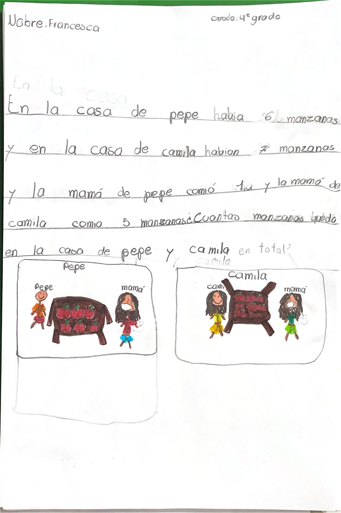
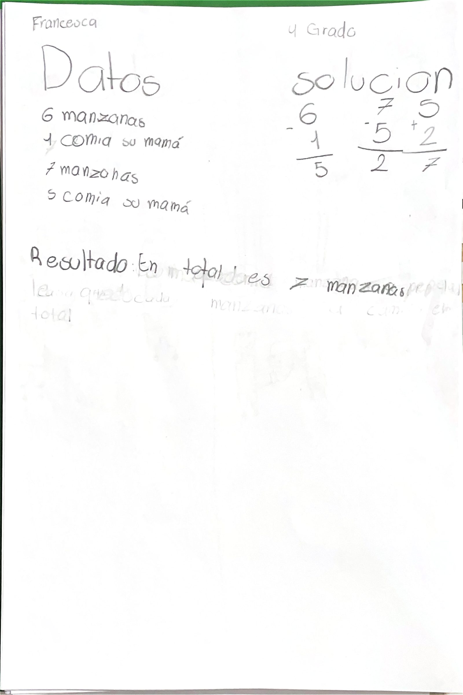

4.º grado
Francesca M.
Francesca cuenta cómo se le ocurrió

Ver cómo se resuelve

Pieza 4-07 · Open House 2026 · Albert Einstein School
4.º grado
Francesca cuenta cómo se le ocurrió


Pieza 4-07 · Open House 2026 · Albert Einstein School